Solar Powered Electric Cargo Hauler ( Click to open/close project tabs )
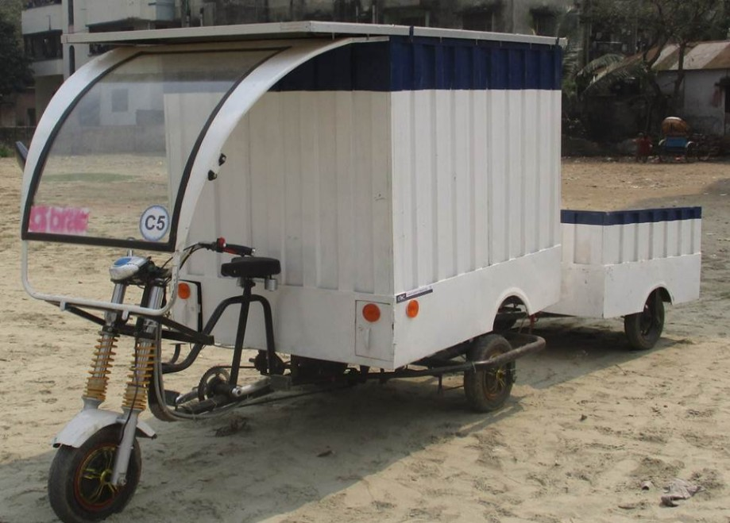
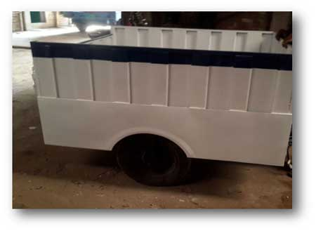
The word ‘climate change’ has now become a serious global concern. For countries like Bangladesh, Maldives and other
coastal countries, it is like a nightmare coming true as most of these countries’ coastal lands, lives and natural resources will be lost due to global warming. To reduce pollution and also to conserve the natural resources people are trying to focus more on renewable energy resources.
A cargo hauler is basically a van which helps us to transfer goods
from one place to another. Traditional cargo haulers with engines use
oil to run the vehicle causing pollution. Manual cargo haulers are vans
that consume a lot of energy of the pullers. Our project targets the van
pullers who manually drive heavily loaded vehicles. We will design a
solar powered electric cargo hauler based on the manual vans’ design
but with a much higher efficiency and essential modifications. Such a
vehicle will not only save the pullers time and energy but also
benefit them more financially. Also since it’s a complete off-grid
solution; the country’s national grid is not involved making the
process more environment-friendly. Our aim is to develop and
implement our design so that all the benefits become achievable.
Our designed cargo hauler has been already implemented with the
IDCOL project and research is now on-going about the feasibility.
Development of Double Burner Smart Electric Stove Powered by Solar Photovoltaic Energy ( Click to open/close project tabs )
Our goal is to design a project which involves the development of a solar
-powered electric stove which would use sunlight as a source of
power. The electricity and gas shortage in Bangladesh are strong
motivators for a solar cook stove to replace the normal stoves. A
successful design must be able to store solar energy, allowing the cooker
to charge during the day and be used during normal cooking
periods. The main components such as controller circuit, converter, solar
panels, etc. would be required to create this stove. It has a
double burner with a controller circuit which controls the current used
for the stove. To make the most of the benefit of renewable energy the
system is planned so that, the national grid will only be in action when
other two inputs (solar panel, battery) are unavailable. We also look
forward to minimize the time usually required for cooking in a
normal stove. We hope that this design could grab the attention of the
investors to invest in this project and be a great initiative for effective
cooking in the households of common people.
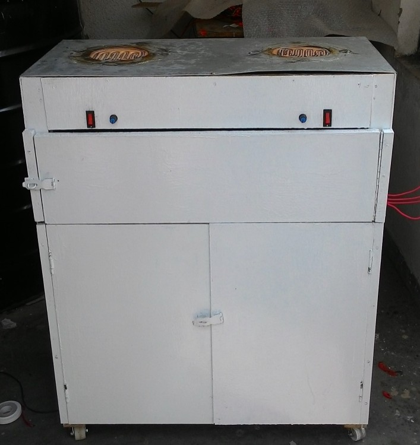
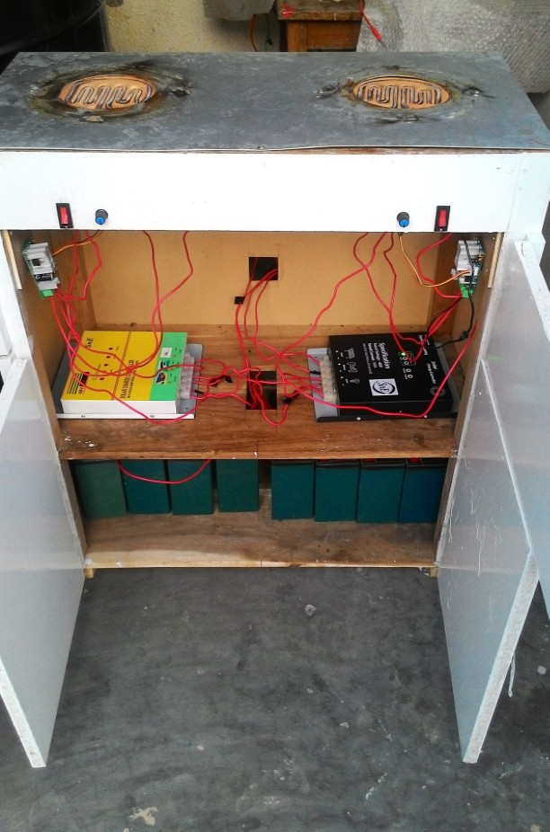
Microcontroller based Monitoring of the Electric Vehicle Performancewith Existing Power Supply ( Click to open/close project tabs )
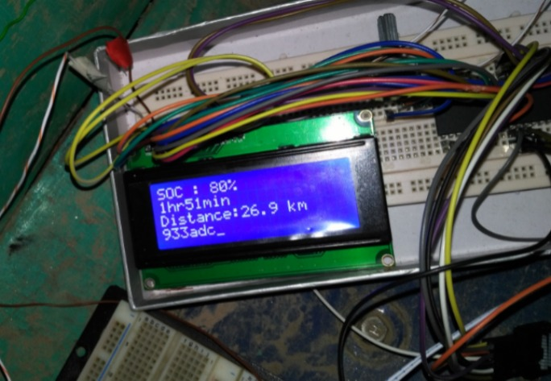
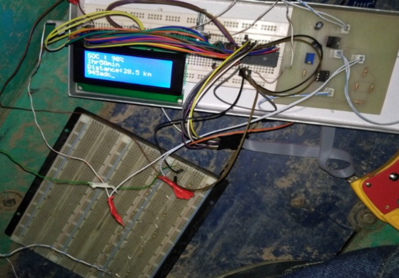
In this project we will find how long the electric vehicle will travel with the available store energy in the source which can be a battery and/or
photovoltaic panel (PV panel). The whole algorithm will go to the microcontroller as input. Here we will give the input in the micro-controller
as battery, PV panel and running speed etc. electrically charged battery will show the amount of remaining charge in percentage on the
display. From the solar energy, PV panel will supply the current to the motor. The speed of the motor rotation is linearly proportional to the
distance of travelling; if the speed increases the vehicle will travel long distance using more stored charge. On the contrary, by decreasing
speed the vehicle will travel small distance consuming a few stored charges. We are expecting to develop an algorithm to optimize the input to
get desired output in the display by using micro-controller.
Power Conservation for Electrically Assisted Rickshaw-Vans with PV Support, Torque Sensor Pedal and The Solar Battery Charging Station - A Complete Off-Grid Solution ( Click to open/close project tabs )

 Rickshaw-vans are the most popular form of transportation in the cities as well as rural areas of Bangladesh. A significant number of people of Bangladesh are directly or indirectly dependent upon this rickshaw-van pulling profession. This paper describes a research to modernize the pollution free rickshaw-van, aiming to improve the lifestyle and income of the rickshaw-pullers and reduce stress on the health of the pullers. The modernized rickshaw-van used in our experiment causes no carbon emission and thus it is eco-friendly.The electrically assisted rickshaw-van consists of torque sensor pedal in order to reduce the over-use of battery-bank. The control system assists the human power with motor and saves energy by reducing the over-use of motor. PV panel is installed on the rooftop of van to share the load power and a solar battery charging station is implemented to make the whole system completely independent of national grid. The paper describes the data obtained from field test to determine its performance, feasibility and user friendliness. The solar battery charging station is designed and its performance analysis is included as well. The hybrid “green” rickshaw-van was developed to save energy, use sufficient solar energy and make it a complete off grid solution.
Rickshaw-vans are the most popular form of transportation in the cities as well as rural areas of Bangladesh. A significant number of people of Bangladesh are directly or indirectly dependent upon this rickshaw-van pulling profession. This paper describes a research to modernize the pollution free rickshaw-van, aiming to improve the lifestyle and income of the rickshaw-pullers and reduce stress on the health of the pullers. The modernized rickshaw-van used in our experiment causes no carbon emission and thus it is eco-friendly.The electrically assisted rickshaw-van consists of torque sensor pedal in order to reduce the over-use of battery-bank. The control system assists the human power with motor and saves energy by reducing the over-use of motor. PV panel is installed on the rooftop of van to share the load power and a solar battery charging station is implemented to make the whole system completely independent of national grid. The paper describes the data obtained from field test to determine its performance, feasibility and user friendliness. The solar battery charging station is designed and its performance analysis is included as well. The hybrid “green” rickshaw-van was developed to save energy, use sufficient solar energy and make it a complete off grid solution.
Low Cost Cylindrical Lumen Testing Procedure In Bangladesh Perspective ( Click to open/close project tabs )
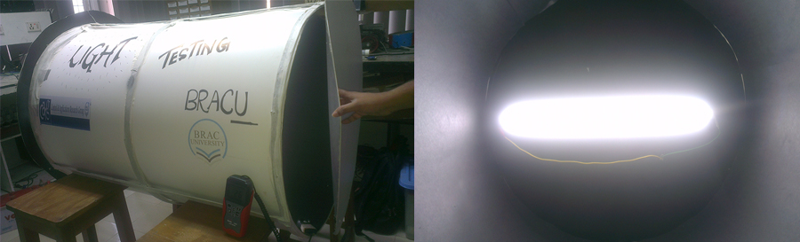
Due to having several Solar Home System components manufacturers,
overall quality of LED lamps varies from organization to organization.
This unstable quality is increasing with the number of SHS installation
and thus the system inefficiency. Hence, testing of LED lamps used in SHS is
very important. However, existing procedure using the integrated sphere system
for lumen test is quite costly in our country's perspective. Considering the situation,
this research presents a low cost cylindrical procedure for lumen testing.
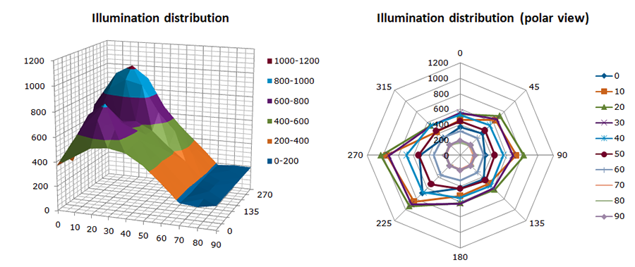
Development of Torque-sensor Based Electrically Assisted Rickshaw Van ( Click to open/close project tabs )
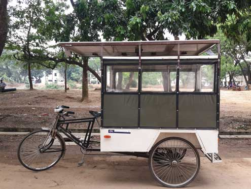
This project aims at modernizing and hybridizing the current design of Rickshaw (passenger carrying
tricycle) by introducing power-assistive-technology. We are designing an intelligent control system
that would make the rickshaw pulling task easier-to-feel by ‘assisting’ the human power with a
motor. Being entirely ‘muscle-powered’ and thus ‘a slow-speed’ vehicle. Rickshaws are often blamed
to be the cause of traffic jam in cities like Dhaka and also practically a reason for low-earning of the
puller-community because of the tremendous amount of physical stress associated with it. However,
considering its contribution to employ a mass number of underprivileged people of Bangladesh, this
project gives a vision towards a massive automation of this hugely-popular vehicle considering all
the practical factors associated with it such as power consumption, user-friendliness, costeffectiveness,
etc.The motivation of our project is to relieve the rickshaw van pullers from their excessive physical
exhaustion which mainly occurs while initiating the momentum from rest to a low speed. A motor
helping the puller only during this particular time eradicates this exhaustion to a great extent. A
normal throttle-controlled-fully-automatic motor-rickshaw could be thought about if energy-supply
was unlimited! So a smart-sensing capability is needed to control the power-consumption, because
we have to optimize and limit the power consumption factor. Hence, a smart torque-sensing device is
involved to determine the “need-of-assistance” and an external controller in addition to the motor.
Solar Electric Ambulance van to Assist the Rural Emergencies of
Bangladesh- A Complete Off-Grid Solution ( Click to open/close project tabs )
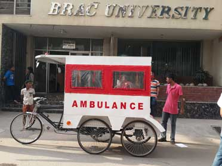
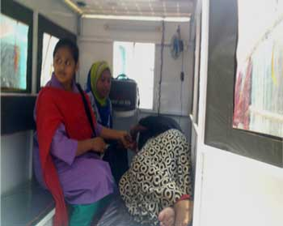
Rickshaws and vans are essential methods of transportation in
Bangladesh especially in the less developed area. In fact most places
in rural areas people are depended on these slow mode of transport for
emergency hospital services of patients as well. Bearing this
phenomena in mind, we proposed the concept to give a complete offgrid
arrangement of torque sensor based solar electric ambulance van.
The torque sensor pedal lessens the over-utilization of battery-bank.
The intelligent control framework reduces the human force and
diminishes the over-utilization of engine. PV panel is introduced on
top of the van to share a part of the power and a solar battery charging
station is installed to make the entire framework totally autonomous
of national grid. This project, in collaboration with BRAC Health Nutrition and
Population Programme, consists of the design and implementation of
the idea proposed by CARC as a continuation of the development of
human hauler.
Real-Time Monitoring of Solar Battery Charging Station ( Click to open/close project tabs )
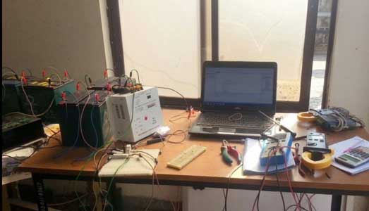
This project provides the process, design and implementation of
solar battery charging station with real time monitoring system
which can be defined as the unconventional energy source and an
alternation of electricity. Today’s world is moving towards
environment friendly smart solutions since the concept of solar
energy is very new in Bangladesh and applications for this source of
energy is limited, new upgrades are required to use this renewable
energy resource efficiently; such a resolution can be solar battery
charging station, moreover real time monitoring makes it more
gratified as it offers software monitoring system; displaying the solar
voltage, solar current, the battery voltage, time remaining to charge.
The software is developed using Microsoft Visual Studio 2013 with the
programing language C# to monitor the real time of solar based battery
charging station using data acquisition (DAQ) card through which all
the analog data can be converted to digital form and display them in
three layered GUI of the software. All the information regarding a
battery to be charged along with the solar condition can be perceived.
Solar energy is generated from sun rays converted to direct current
through photovoltaic panels; hence this direct current (DC) is stored in
batteries, therefore monitoring the charging status of these batteries is
essential. Furthermore the project demonstrates a design of making
manual switching system when there is lack of solar radiation due to
climatic change or if any blunder occurs in the panels then instantly switches
to disel generator.
Real Time Vehicle Tracking System ( Click to open/close project tabs )
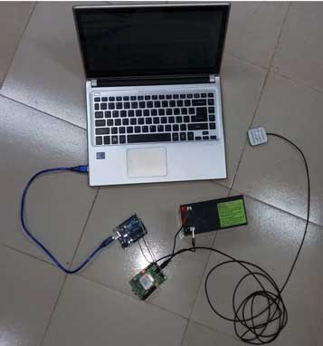
Real- time tracking and management of vehicles is now one
of the major concerns of every vehicle owner. It provides
security for theft and many more additional features can be
added to the system depending on the requirements of
services. Our project comprised of the following key features of vehicle
tracking:
1. To make an efficient tracking system
2. To get location of target vehicles using GPS.
Torque Sensor-based Solar Powered Electric Wheel-chair with a Dedicated Solar Charger Kit ( Click to open/close project tabs )
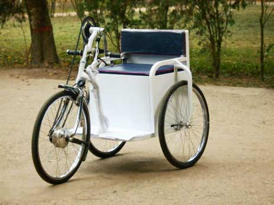
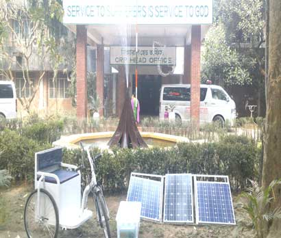
Mobility of the physically disabled people is a great concern in our society.
Physically disabled people are basically using some assistive devices like,
crutches, artificial limbs or legs etc. and manual wheel chairs or three-wheelers
for their day-to-day movements. In response to this Control and Research
Applications Center (CARC) of BRAC University has conducted a research on
making an electrical wheelchair with a dedicated solar charger kit. The aim of
the project is to propose a system which will increase the moving distance with a
better mobility for the physically disabled people in Bangladesh without
consuming any power from our national grid. It is an IEEE funded project.
Currently the project is in collaboration with Centre of Rehabilitation of
Paralyzed (CRP).
Store and Forward based Health Monitoring System for Old Age Homes ( Click to open/close project tabs )
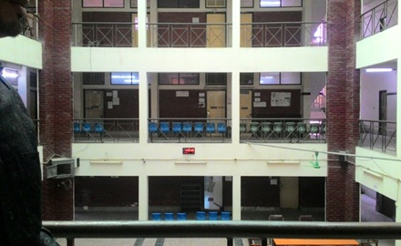
The concept of Old Age Home is not very popular in Bangladesh due to the concern of health monitoring system. Sometimes this is not possible due
to the lacking and limitation of expert staff. Hence the purpose of our project is to develop a monitoring system that can be handled with minimum number of expert staffs and less obstruction. As well as to analyse the basic health reading of aged people the system also can make a record of it serial wise for providing urgent medication to the patient when needed and thus, reduce the life risk. The project gives an analysis of how to build up
a system collaborating software and hardware to obtain basic health readings like body temperature, blood-pressure, and saturation of oxygen in blood. The project will also contain video footage using IP camera through networking. In this project from the beginning a trained medical observer, who will have the basic health readings from the patient and enter the readings into the GUI developed specifically for this project. The GUI is being
developed in Microsoft Visual Studio version 2012 with the help of C# coding. The GUI contains 16 blocks, each block accommodates medical data
of a single patient along with the video footage. The number of blocks can be increased according to the requirement. We have used the software
GUI which will contain separate blocks each containing single patient’s profile. It will also show a graph of the provided readings which will help
the specialized ones to monitor more easily. The target of the project is to store and forward the data to the specialized doctors through high speed
internet in order to improve the monitoring system and to minimize the cost of the system. The project also promotes the mass number of people to
get the advantages of such monitoring system.
Energy Conservation of Electric Hybrid Rickshaw with PV Support ( Click to open/close project tabs )
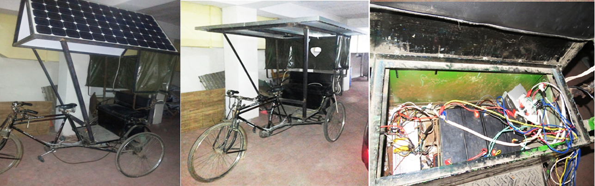
The research comprised of the implementation of a 360W PV array on the rickshaw
that would provide a share of the required electrical load alongside the battery
bank to reduce the energy consumption from the battery bank and thus increase the
battery cycle duration. A secondary purpose of this array is to charge the batteries
when the rickshaw is at rest, thus reducing the need to charge the batteries in the
middle of the day when the grid is already supplying power at peak condition. The torque
sensor paddle system was not incorporated for this design for determining the overall
effect of the array on the factory default setup. A charge controller has been introduced
into the system to control the charging of the batteries when power is not drawn from them
and to control the direction of the power flow for different situations, e.g. array power
supply is higher than required load power or array power supply is less than the required
load power. Data from the test runs show that over 60% of the required load power can be
supplied by the PV array and the running distance can be approximately triple of that of
the factory default setup. It is also seen that a massive 50% energy consumption, that is
required to charge the batteries, can be avoided which would have had to come from the national
grid in absence of the PV array for a running capacity of a similar distance.
Power Conservation for Electrically Assisted Rickshaws with PV Support,Torque Sensor Paddle and the Solar Battery Charging Station ( Click to open/close project tabs )
In spite of the enormous popularity gained due to their lesser travelling
time and relatively cheaper fare, the electrically assisted rickshaws, pioneered
by The Beevatech Ltd, has been banned from commercialization due to their energy
consumption from our already overloaded national grid for charging their batteries.
 Housing a 48V brushless DC motor and a 48V 20Ah battery bank (factory default)
these rickshaws can consume over 960Wh of energy from the national grid each
time they are charged, the accumulation of which for the total number of rickshaws
currently running countrywide is highly significant. In response to this predicament,
a research team consisting of thesis research students and the CARC research members
headed by Professor AKM Abdul Malek Azad, Director, CARC has conducted a research on
making these rickshaws completely independent of the national grid through the use of
solar energy and a newly developed technology.
The research was conducted in a threefold approach:
1. Replacing the throttle system by a torque-sensor paddle to eliminate the
over-use of the battery bank
2. Providing a share of the load power through PV array assistance
3. Implementing a solar powered battery charging station
In the current design of these rickshaws, the power supply to the load is controlled by
a throttle system like motorcycles which has led to complete elimination of the human
effort for running the rickshaw as opposed to reducing the human effort which was the
original target. This in turn has led to higher energy consumption from the battery bank
and consequently from the national grid as the battery energy is depleted more frequently.
Thus in the first stage of this research, the throttle system has been removed and a
torque sensor paddle has been introduced into the system to reduce the over and inappropriate
use of the bestowed technology. This paddle senses the torque applied on the paddle when force
is exerted to move or change the velocity of the rickshaw and provides a share of the
required torque, or in other words provides an 'assistance' to the puller, according to
the 'need' of the puller through the electrical system.
Housing a 48V brushless DC motor and a 48V 20Ah battery bank (factory default)
these rickshaws can consume over 960Wh of energy from the national grid each
time they are charged, the accumulation of which for the total number of rickshaws
currently running countrywide is highly significant. In response to this predicament,
a research team consisting of thesis research students and the CARC research members
headed by Professor AKM Abdul Malek Azad, Director, CARC has conducted a research on
making these rickshaws completely independent of the national grid through the use of
solar energy and a newly developed technology.
The research was conducted in a threefold approach:
1. Replacing the throttle system by a torque-sensor paddle to eliminate the
over-use of the battery bank
2. Providing a share of the load power through PV array assistance
3. Implementing a solar powered battery charging station
In the current design of these rickshaws, the power supply to the load is controlled by
a throttle system like motorcycles which has led to complete elimination of the human
effort for running the rickshaw as opposed to reducing the human effort which was the
original target. This in turn has led to higher energy consumption from the battery bank
and consequently from the national grid as the battery energy is depleted more frequently.
Thus in the first stage of this research, the throttle system has been removed and a
torque sensor paddle has been introduced into the system to reduce the over and inappropriate
use of the bestowed technology. This paddle senses the torque applied on the paddle when force
is exerted to move or change the velocity of the rickshaw and provides a share of the
required torque, or in other words provides an 'assistance' to the puller, according to
the 'need' of the puller through the electrical system.
 An integrated circuit has also been developed by CARC that incorporates the torque sensor
paddle to the motor controller instead of the throttle. Data from the experimental runs
show that after four long hours of field test, more than 80% charge was remaining in the
battery. Thus the running distance capacity of these rickshaws using the factory default
battery can be increased significantly. It was also seen that in this four hours of test
run with the torque sensor paddle, the system consumes 42.16% less energy of that during
test run with throttle control system. Furthermore, another drawback of the throttle control
system is that the motor produces a sudden thrust when the throttle is applied from a
stationary condition, as well as while in motion, which can often cause accidents. The
designed new technology enables to discard of these sudden thrusts as the controller is
only allowed a linear input of the motor power proportional to the applied torque. The
main prospect of this system is that thesemodifications can be made in existing rickshaws
and also beenergy efficient as the motor will only be used to produce the torque required
to move the vehicle from rest up to a cruising speed, and not run the vehicle all throughout.
The second stage of the research comprised of the implementation of a 360W PV array on the
rickshaw that would provide a share of the required electrical load alongside the battery
bank to reduce the energy consumption from the battery bank and thus increase the battery
cycle duration.A secondary purpose of this array is to charge the batteries when the
rickshaw is at rest, thus reducing the need to charge the batteries in the middle of the
day when the grid is already supplying power at peak condition. The torque sensor paddle
system was not incorporated for this design for determining the overall effect of the
array on the factory default setup. Figure 3 shows the implementation of the PV array on
the rickshaw and the newly introduced charge controller system setup.
An integrated circuit has also been developed by CARC that incorporates the torque sensor
paddle to the motor controller instead of the throttle. Data from the experimental runs
show that after four long hours of field test, more than 80% charge was remaining in the
battery. Thus the running distance capacity of these rickshaws using the factory default
battery can be increased significantly. It was also seen that in this four hours of test
run with the torque sensor paddle, the system consumes 42.16% less energy of that during
test run with throttle control system. Furthermore, another drawback of the throttle control
system is that the motor produces a sudden thrust when the throttle is applied from a
stationary condition, as well as while in motion, which can often cause accidents. The
designed new technology enables to discard of these sudden thrusts as the controller is
only allowed a linear input of the motor power proportional to the applied torque. The
main prospect of this system is that thesemodifications can be made in existing rickshaws
and also beenergy efficient as the motor will only be used to produce the torque required
to move the vehicle from rest up to a cruising speed, and not run the vehicle all throughout.
The second stage of the research comprised of the implementation of a 360W PV array on the
rickshaw that would provide a share of the required electrical load alongside the battery
bank to reduce the energy consumption from the battery bank and thus increase the battery
cycle duration.A secondary purpose of this array is to charge the batteries when the
rickshaw is at rest, thus reducing the need to charge the batteries in the middle of the
day when the grid is already supplying power at peak condition. The torque sensor paddle
system was not incorporated for this design for determining the overall effect of the
array on the factory default setup. Figure 3 shows the implementation of the PV array on
the rickshaw and the newly introduced charge controller system setup.
 A charge controller has been introduced into the system to control the charging of the
batteries when power is not drawn from them and to control the direction of the power
flow for different situations, e.g. array power supply is higher than required load power
or array power supply is less than the required load power.Data from the test runs show
that over 60% of the required load power can be supplied by the PV array and the running
distance can be approximately triple of that of the factory default setup. It is also seen
that a massive 50% energy consumption, that is required to charge the batteries, can be
avoided which would have had to come from the national grid in absence of the PV array
for a running capacity of a similar distance.
The final stage of this research was to develop and implement a battery charging station
powered by solar energy. This step was taken to ensure complete independency of these
electrically assisted rickshaws from the national grid and thus open up the door for
commercializing these rickshaws to localities where grid connection has not yet reached
or the available power is already inadequate but however the prospect of these rickshaws
are significant. The system has been designed to be incorporated with both the torque-sensor
paddle system and the PV array support system for providing fully charged battery to the
rickshaw and the beginning of a day and can be centrally monitored in real time and controlled.
A charge controller has been introduced into the system to control the charging of the
batteries when power is not drawn from them and to control the direction of the power
flow for different situations, e.g. array power supply is higher than required load power
or array power supply is less than the required load power.Data from the test runs show
that over 60% of the required load power can be supplied by the PV array and the running
distance can be approximately triple of that of the factory default setup. It is also seen
that a massive 50% energy consumption, that is required to charge the batteries, can be
avoided which would have had to come from the national grid in absence of the PV array
for a running capacity of a similar distance.
The final stage of this research was to develop and implement a battery charging station
powered by solar energy. This step was taken to ensure complete independency of these
electrically assisted rickshaws from the national grid and thus open up the door for
commercializing these rickshaws to localities where grid connection has not yet reached
or the available power is already inadequate but however the prospect of these rickshaws
are significant. The system has been designed to be incorporated with both the torque-sensor
paddle system and the PV array support system for providing fully charged battery to the
rickshaw and the beginning of a day and can be centrally monitored in real time and controlled.
 A 400W solar battery charging station (SBCS) was implemented at the BRACU campus to
determine its applicability and feasibility. Data from the experiments carried out in the
winter, when the incident solar energy is at minimum, show that two 48V 20Ah battery,
discharged up to 50%, can be fully charged within less than a single day and be ready
for service on the next.That is, for each battery charged fully, 480Wh of energy can be
saved from the national grid which at an everyday rate sums up to 1,72.80kWh per year.
Software has been developed for monitoring and controlling the operation of the charging
station.
A pilot project is already being planned where the torque sensor paddle and the PV array
system will be implemented together to determine the total impact they have on the
performance of these rickshaws and to determine the amount of energy that can be saved
from the national grid. This setup will also be supplemented by the SBCS to analyse its
grid independency, the station's performance for the newly implemented system and its
feasibility.
A 400W solar battery charging station (SBCS) was implemented at the BRACU campus to
determine its applicability and feasibility. Data from the experiments carried out in the
winter, when the incident solar energy is at minimum, show that two 48V 20Ah battery,
discharged up to 50%, can be fully charged within less than a single day and be ready
for service on the next.That is, for each battery charged fully, 480Wh of energy can be
saved from the national grid which at an everyday rate sums up to 1,72.80kWh per year.
Software has been developed for monitoring and controlling the operation of the charging
station.
A pilot project is already being planned where the torque sensor paddle and the PV array
system will be implemented together to determine the total impact they have on the
performance of these rickshaws and to determine the amount of energy that can be saved
from the national grid. This setup will also be supplemented by the SBCS to analyse its
grid independency, the station's performance for the newly implemented system and its
feasibility.
 The electrically assisted rickshaws have opened a new sector of automation of vehicles
in Bangladesh and have the potential of making an enormous contribution to the growing
economy of this country. More importantly due to their lesser travelling time and the
electrical assistancethey have improved lifestyles of the rickshaw pullers through
increased earning and reduced stress on health. Being the most common and flexible mode
of transport in Bangladesh, rickshaws have created a legacy of their own, such automation
of which can lead to a better lifestyle not only for the pullers but the passengers also.
The true prospect of these electrically assisted rickshaws are still unexplored due to the
ban put on its commercialization because of their energy consumption from the national grid.
Our research has shown that these rickshaws can be made independent of the national grid and
be made self-sustained through the utilization of the abundant solar energy available in
Bangladesh and the torque sensor technology developed at the Control & Applications
Research Centre.
The electrically assisted rickshaws have opened a new sector of automation of vehicles
in Bangladesh and have the potential of making an enormous contribution to the growing
economy of this country. More importantly due to their lesser travelling time and the
electrical assistancethey have improved lifestyles of the rickshaw pullers through
increased earning and reduced stress on health. Being the most common and flexible mode
of transport in Bangladesh, rickshaws have created a legacy of their own, such automation
of which can lead to a better lifestyle not only for the pullers but the passengers also.
The true prospect of these electrically assisted rickshaws are still unexplored due to the
ban put on its commercialization because of their energy consumption from the national grid.
Our research has shown that these rickshaws can be made independent of the national grid and
be made self-sustained through the utilization of the abundant solar energy available in
Bangladesh and the torque sensor technology developed at the Control & Applications
Research Centre.
Development of Torque-sensor based Electrically Assisted
Hybrid Rickshaw ( Click to open/close project tabs )
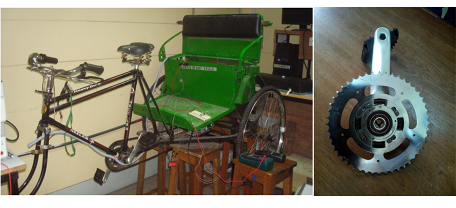
This project aims at modernizing and hybridizing the current design of
"Rickshaw" (passenger carrying tricycle) by introducing powerassistive-
technology. We are designing an intelligent control system
that would make the rickshaw pulling task easier-to-feel by 'assisting'
the human power with a motor.
Being entirely 'muscle-powered' and
thus 'a slow-speed' vehicle, Rickshaws are often blamed to be the cause
of Traffic Jam in cities like Dhaka and also practically a reason for lowearning
of the puller-community because of the tremendous amount of
physical stress associated with it. However, considering its contribution
to employ a mass number of underprivileged people of Bangladesh, this
project gives a vision towards a massive automation of this hugelypopular
vehicle considering all
the practical factors associated
with it like- power consumption,
user-friendliness, costeffectiveness
etc. The motivation
of our project is to relieve
the rickshaw pullers from their
excessive physical exhaustion
which mainly occurs while initiating
the momentum from rest to a low speed. A motor helping the puller
only during this particular time eradicates this exhaustion to a great extent.
A normal throttle-controlled-fully-automatic motor-rickshaw could
be thought about if energy-supply was unlimited! So a smart-sensing capability
is needed to control the power-consumption, because we have to
optimize and limit the power consumption factor. So a smart torquesensing
device is involved to determine the "need-of-assistance" and an
external controller in addition to the motor controller was designed and
implemented. A budget of Tk.75,000/- was funded by BRAC University
for this project.
Automatic Solar Hot Water System with Additional Storage Tank ( Click to open/close project tabs )
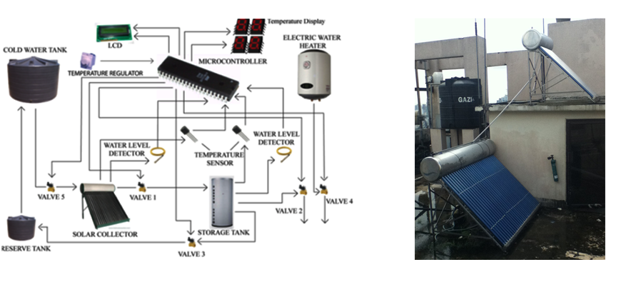
Hot water system using solar energy can be a very good application. As
of today hot water is needed in different places like hospitals, hotels, and
pharmaceuticals. In hospital hot water usually use for sterilization and
wash laundry and for hotel they need hot water for cooking, commercial
wash .It is a daily basis need. Source of energy to produce this hot water
come solely form electrical power which consumes a lot of energy and
lot of money.
This project is aimed to incorporate solar energy which would allow the
user to attain hot water in an efficient and cheap manner. This automated
system would allow the user to get hot water from the solar water heater
as long as the solar water heater can supply hot water above the desired
temperature. If the solar water heater is unable to supply water above the
set temperature, then only will the electric water heater come into action.
The project cost Tk.275,000/- which was, very kindly, provided by
BRAC University.
An alternative Solar Water Heater project has been developed for
ENERGYPAC Bangladesh. We have already completed making the
controller and this unit is under testing in ENERGYPAC facility.
Performance Improvement of SHWS by Increasing Thermal Efficiency Using Insulation Materials and Optimum Position of Solar Collectors ( Click to open/close project tabs )
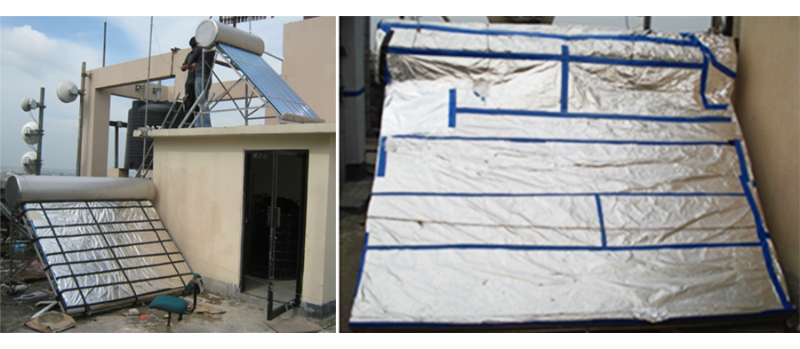
A Solar Hot Water System
(SHWS) has been already designed
and further implementation
has been done by working
on its insulation at variable
time, temperature and solar
radiation so that there is a
minimum temperature drop over night decreases. A suitable material is
found for insulation which is feasible, cost effective and available. For
this project an instrument named "Pyranometer" has been used to
measure solar radiation flux density (in watts per meter square) and the
experimental data collected from pyranometer was used to find the optimum
position of SHWS.
Thermal insulation is the reduction of the effects of the various processes
of heat transfer between objects in thermal contact or in range of
radiative influence.
Thermal insulation provides a means to maintain a gradient of temperature,
by providing a region of insulation in which heat flow is reduced or
thermal radiation is reflected rather than absorbed. We did survey in different
types of insulation material like- cork, rock wool, glass wool, aluminium
foil, rubber, polystyrene etc. Depending on the cost, availability
and resources cork and aluminium foil is installed.
Design and Development of Microcontroller based ECG Simulator ( Click to open/close project tabs )
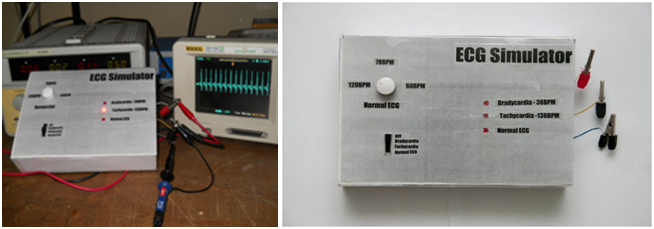
Electrocardiogram (ECG) is a graphic recording of the electrical potentials
rhythmically produced by the heart muscle. For the training of doctors
as well as for design, development and testing of automatic ECG
machines, a subject with a known abnormality of heart is essentially
required. Using human beings as test subjects has been made illegal and
considered unethical in many countries. CARG research group has developed
an ECG simulator that can simulate such subject for the abovementioned
purpose. The significance of the ECG simulator is that the
subject has been replaced. The simulator is a useful tool for electrocardiograph
calibration and monitoring, to incorporate in educational tasks
and clinical environments for early detection of faulty behavior. The
device is based on a microcontroller and generates the basic ECG wavewith variable BPM and arrhythmia waves. These signals are fed as an
input to the ECG machine. The signals can be used for testing, servicing,
calibration, and development of the ECG monitoring instruments.
The same simulator can be implemented and developed to have a 3 lead
or a 12 lead output to connect all 12 leads of the ECG machine to the
simulator. The commercially available ECG simulators cost in the
range of 200 USD to 1000 USD. These simulators have many more
features and are far more sophisticated. Our ECG simulator fulfills the
low range simulator features. In addition, the cost is far cheaper. It is
only about 11.35 USD.
Time-Delay Analysis of Bio Signal Analyzer
in Hard Real-Time Environment ( Click to open/close project tabs )
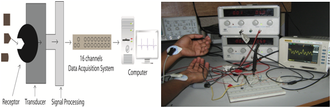
This thesis presents a
biosensor based animal
testing laboratory set up
for research purpose. The
motivation for establishment
of such a system
came from the scarcity of
animal testing laboratory
in the South Asian region. The proposed sampled data system will receive different
physiological signal such as temperature, ECG, respiratory rate etc
through biosensors and the signal will be transferred to the computervia 16 channels USB-
4716 data acquisition
card in different operating
systems. In this
thesis a clear overview
of five sensors to be
used to measure different
physiological condition
and the required signal processing circuitry is presented. Experiments
are conducted on two sensors and results are shown in GUI developed
under windows platform. Total time delay is compared in general
purpose, soft real-time and hard real-time operating systems. Theoretical
analysis is done on time delay analysis of sampled data system,
which is very important to design any sophisticated control system. The
mathematical model for building the controller of the multi-rate sampled
data system is also developed.
Development of Electric Stove for Smart Use of Solar Photovoltaic Energy with National Grid ( Click to open/close project tabs )
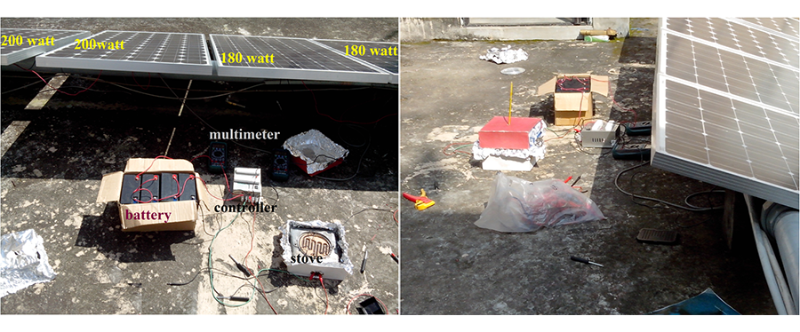
This project concentrates on developing an alternative solution for
cooking through the use of the most abundant source of energy in
Bangladesh- solar energy. It will concentrate on design, implementation
and both economic and technical prospects of a solar powered DC hybrid
stove in Bangladesh in an effort to reduce gas usage, lessen expense
and risks of explosion (for people who uses gas cylinders) and
fire for users and providing green and free renewable energy.
In the proposed design, a coil will be supplied with 500W DC power.
Part of that power will be supplied from the PV modules and the rest
balanced by the national grid. The AC power from the national grid will
rectified to DC power, rather than DC power converted to AC, to avoid
complications of synchronization of the phase and frequency of the two
inputs, increased complexity, size and cost of circuitry. The project will
focus on finding the feasibility of the system from the amount of load
taken off the national grid and national gas supply. Daily average energy
requirements for cooking will be determined through surveys, tests
and experiments. The optimum system size of the whole system will be
determined through consideration of average energy required per day,
initial cost, and amount of load taken off the respected national supplies.
Improvement of Efficiency for Solar Photovoltaic Cell Applications ( Click to open/close project tabs )
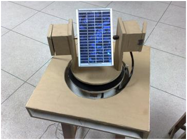
Renewable energy solution
has achieved a great demand
today to meet the energy
crisis prevailing everywhere.
Solar energy is rapidly
gaining its popularity
as an important source of
this renewable energy. In
order to obtain the maximum
output from this solar
cell it should be ensured that the solar panel is getting maximum light
intensity from the sun which is only possible if the solar panel can be
kept orthogonal with the sun position. So a model of automatic sun
tracking system was designed to improve the output power of the solar
panel. The proposed methodology has been tested for different parameters
such as current-voltage characteristics of the panel, effect of shadows
on the panel and also comparison has been shown for two different
types of panel (3 watt and 50 watt panel) to verify the output power improvement
of the movable photovoltaic array compared to the fixed array.
A Multitasking PC Based Robotic Arm Manipulator Control System in RT-Linux Environment ( Click to open/close project tabs )
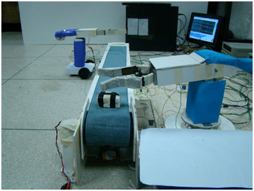
Every year, notable amount of
works get injured because of
working in hazardous environments.
Keeping these in mind,
two projects on robotic arm
manipulators were implemented
in BRAC University.
The concepts developed in
these projects are believed to be efficient than human workers and can
work in dangerous conditions without any risk of life. The two projects
includes one with independent mobile robotic arm manipulator which
will execute the command which is built within the microcontroller of
its circuit and the other which consists of an independent mobile robotic
arm and another arm controlled by Linux. The mobile robotic arm manipulator
was build for industries, which require movable arms to carry
heavy loads from one place to another. This arm is programmable where
the program is downloaded in the microcontroller. The multitasking arm
manipulator, as mentioned earlier, consists of a mobile arm manipulator
for carrying objects from one place to another and the other arm is an
stationary one which is controlled by RT Linux for transporting or assembling
objects within a limited radius.
New Approach to Improve the Reliability of DPDC SCADA Communication Systems ( Click to open/close project tabs )
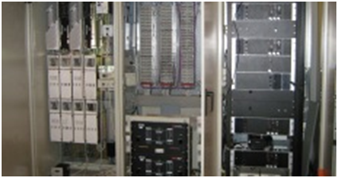
Supervisory Control and Data Acquisition (SCADA) is used broadly
to portray control and management solutions in a wide range of industries.
SCADA system failure may lead to disastrous consequences
since the health and the safety of the public as the economic viability
of the community it serves depends on it.
After its introduction in DPDC over a decade ago, the SCADA system
hardly had any performance up gradation. Currently the microwave
link in SCADA Communication is observing problems that are
rendering the entire structure obsolete.This paper revises the possibility to implement a new communication
technology and proposes Free Space Optical (FSO) Communication to
enhance SCADA system reliability. FSO refers to the transmission of
modulated visible or infrared (IR) beams through the air to obtain optical
communication. Like optical fibre, FSO also uses lasers to transmit
data, but instead of enclosing the data stream in a glass fibre, the data is
transmitted through the air. It is a secure, cost-effective alternative to
other wireless connectivity options.
Performance Improvement of DPDC SCADA System Using Hard Real-Time OS ( Click to open/close project tabs )
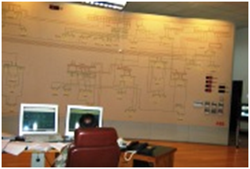
Supervisory Control and Data Acquisition SCADA system is extensively
used in power systems specifically for monitoring different
power parameters, operating and controlling power electronics as well
as other high voltage elements. SCADA system failure can be an outcome
of inevitable consequences which include equipment damage,
customer load losses even life losses. Dhaka Power Distribution Company
Ltd. (DPDC) former DESA has been using SCADA over a decade
which was developed by ABB.At the early stage ABB came across
some limitations which later on were
solved in such a way that may not
convene the time precision that present
technological development demands.
ABB used soft real time operating
system UNIX. This OS usually responses with high latency which
sometimes caused some remote power elements to fail in certain time
frame. Evaluating these consequences, the research indicated some draw
backs of current DPDC, SCADA system and proposed Hard RT Linux as
an operating system of current DPDC SCADA to provide the appropriate
level of reliability of the SCADA system.
Performance Comparison of CPLD and PLD Based Traffic Light Control System ( Click to open/close project tabs )
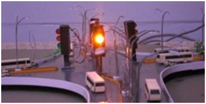
PLD and CPLD have been extensively
used for custom
made circuits. That is why they
are perfect for designing traffic
light control systems. This project
represents the performance
comparison of a traffic light
control system designed on GAL (Generic Array Logic) using Programmable
Logic Device (PLD) and on FPGA (Field Programmable Gate Array)
using Complex Programmable Logic Device (CPLD). For our PLD implementation,
we have considered GAL (16V8) chips, which can be reprogrammed
and erased. For the CPLD implementation, we have considered
FPGA (Altera's Flex 10k family's EPF10K10TC144-4) chip, which
is a 144 pin SRAM. The CPLD design was developed using the CPLD
programming software MAX PLUS2 v 9.23. The traffic light controller
consists of traffic signals (Red, Yellow/Amber & Green). We have designed
the traffic controller using both CPLD and PLD. Then we have
taken the real time waveform as well as the simulated waveform for different
frequencies. The Digital Storage Oscilloscope (DSO) was used to
generate the real time wave from the traffic controllers. The results from
the real time waveform clearly illustrates that CPLD has the better performance
over the PLD technology. Furthermore we have designed
complex circuits for automated detection of railway crossing and A Five
road junction controlling Traffic light system.
Hybridization of Solar Energy with National Grid to Supply DC Class Room Loads (prototype version) ( Click to open/close project tabs )
 The fact that our country has serious deficit of electrical energy needs
no further proving. CARG has thus been pushing its researches towards
developing and implementing renewable energy systems that could help
fight this deficit. This project is a consequence of these researches and
holds promises of contribution towards growth of the power sector ofBangladesh. The primary aim of the project is to reduce electricity consumption
from the national grid through replacing the existing lighting
and fans of one of the class rooms of BRAC University with solar LED
lamps and DC fans which are far less power consuming than the traditional
(existing) system. A prototype system has been designed and
tests were carried out on 75W system with 7 LED lamps (3.5W each)
and 1 DC fan (15W). The test was performed on the prototype in the
month of February. The maximum total irradiation of the month is
701Wh/m2 (1) which correspondents to 52.57W (70% of 75W) of
power.
Through our experiment it is observed that more than 60% of the electricity
bill can be saved only in the month of February. What is more
important is that, 60% of electrical energy is being saved from the
national grid.
The fact that our country has serious deficit of electrical energy needs
no further proving. CARG has thus been pushing its researches towards
developing and implementing renewable energy systems that could help
fight this deficit. This project is a consequence of these researches and
holds promises of contribution towards growth of the power sector ofBangladesh. The primary aim of the project is to reduce electricity consumption
from the national grid through replacing the existing lighting
and fans of one of the class rooms of BRAC University with solar LED
lamps and DC fans which are far less power consuming than the traditional
(existing) system. A prototype system has been designed and
tests were carried out on 75W system with 7 LED lamps (3.5W each)
and 1 DC fan (15W). The test was performed on the prototype in the
month of February. The maximum total irradiation of the month is
701Wh/m2 (1) which correspondents to 52.57W (70% of 75W) of
power.
Through our experiment it is observed that more than 60% of the electricity
bill can be saved only in the month of February. What is more
important is that, 60% of electrical energy is being saved from the
national grid.
Implementation of hardware and software of solar panel testing parameters ( Click to open/close project tabs )
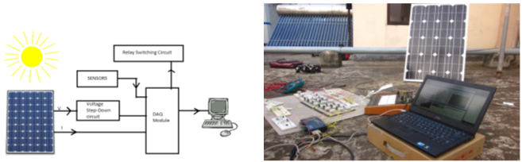
This project has been
carried out to study and
find a reliable and comparatively
cheaper alternative
to the Solar
Simulator which would
test the quality of the
solar panels. This project focused on a computer operated system by
developing software that would directly accumulate the different panel
parameters automatically which are required for the assurance of quality.
This experiment required the use of solar simulator which is not
economically feasible for our country and also lacks accuracy since the
best evaluation of the
panel parameters would
be obtained if exposed
under the sun using sun as
the simulator. So our purpose
was to come up with
a cheaper yet reliable alternative
which would
challenge the solarsimulator as well as have the potential to be used as a significant tool
in solar parameter application.
Stepper Motor Performance Under Real-Time Multitasking Environment ( Click to open/close project tabs )
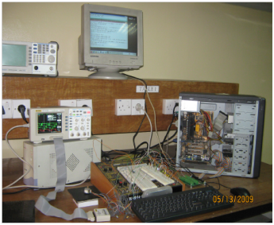
Multitasking is a very important factor in our computerized world. But
it will be more efficient when it is uninterruptible. On the other hand
accuracy is another unavoidable factor. So in this paper we want to implement
an open loop system for stepper motor using RT-LINUX in
case of multitasking. In this work we have used a RT-Linux which controls the whole system
in real-time method. A Data Acquisition Card (DAQ) card is used to
send and receive data from the hardware interface and multiple tasks
can be controlled. ULN2003 is used as a driver circuit, which takes data
from the DAQ card and helps to drive the unipolar stepper motor.
Completed Projects
In this project work on open loop control of stepper motor is considered
under general purpose (Windows), Soft (Linux) and hard (RT-Linux)
real-time operating systems. The same controller program was used to
operate the stepper motor in different operating system under multitasking
environment.
We found RT-Linux (RTOS) based program provides better performance
than soft real-time and general purposes OS from time delay and
stability point of view.